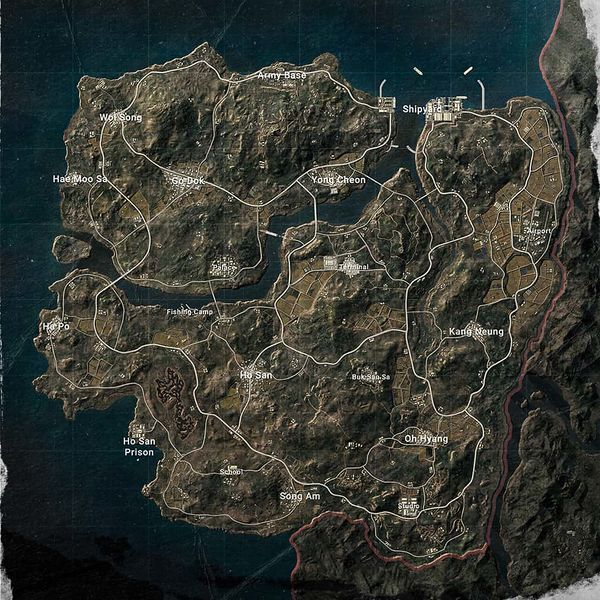
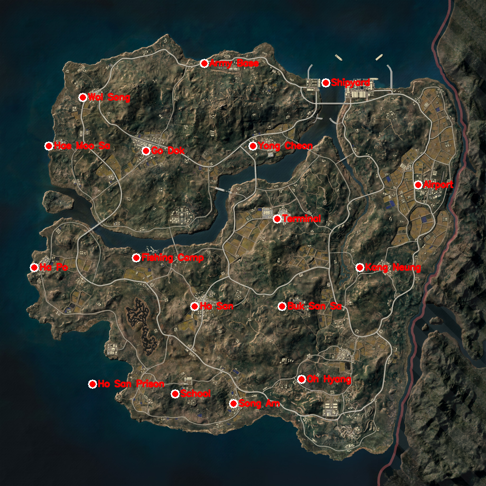

2026-05-25 · 에란겔 27도시 방식 그대로 · 좌표 엔진은 이미 0.32px 확정, 이제 지명 라벨만


| 지명 | gx | gy | 위치 |
|---|---|---|---|
| Army Base | 0.42 | 0.13 | 북중앙 상단 |
| Shipyard | 0.67 | 0.17 | 북동 |
| Wol Song | 0.17 | 0.20 | 북서 |
| Hae Moo Sa | 0.10 | 0.30 | 서 |
| Go Dok | 0.30 | 0.31 | 중서 |
| Yong Cheon | 0.52 | 0.30 | 중앙 상 |
| Airport | 0.86 | 0.38 | 동쪽 격자지대 |
| Terminal | 0.57 | 0.45 | 중앙 |
| Ha Po | 0.07 | 0.55 | 서쪽 끝 |
| Fishing Camp | 0.28 | 0.53 | 중서 하 |
| Kang Neung | 0.74 | 0.55 | 동중 |
| Ho San | 0.40 | 0.63 | 중앙 하 |
| Buk San Sa | 0.58 | 0.63 | 중하 |
| Ho San Prison | 0.19 | 0.79 | 남서 |
| Song Am | 0.48 | 0.83 | 남중 |
| Oh Hyang | 0.62 | 0.78 | 남동중 |
| School | 0.36 | 0.81 | 남 |
이 좌표가 확정되면 myungdang_pov_v3.py의 에란겔 CITIES처럼 TAEGO_CITIES로 코드에 넣어서, 태이고 검출 결과에 도시 라벨·자기장 거리를 붙일 수 있어.
정밀 검증은 IP 풀려 고해상도 태이고 전체맵을 받으면 영상 좌표와 직접 대조해 확정할 수 있어. 지금은 라벨 맵 기준 1차.